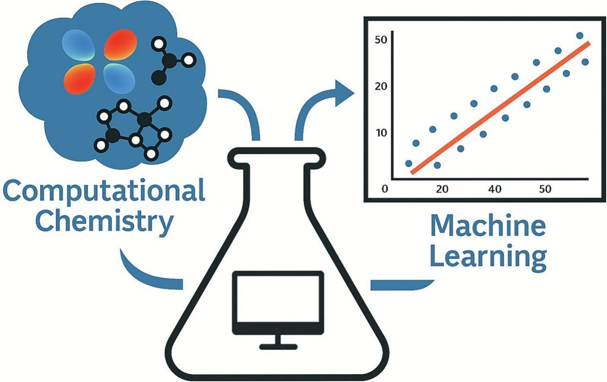
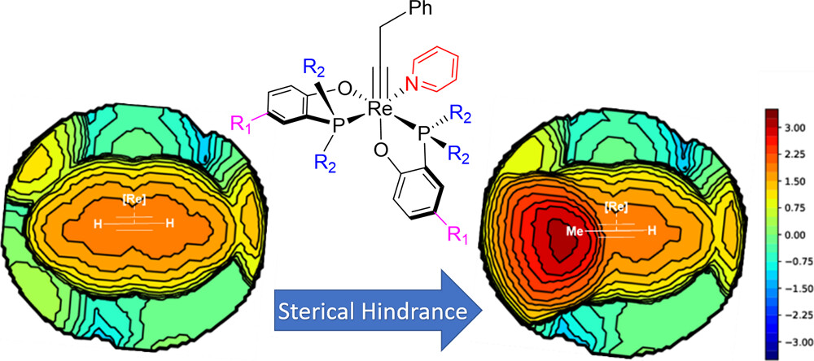
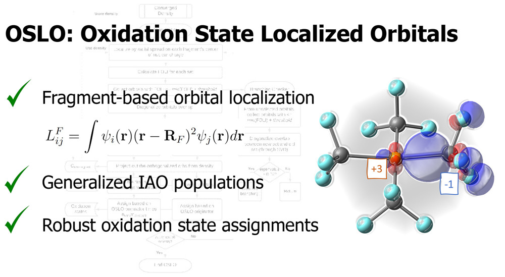
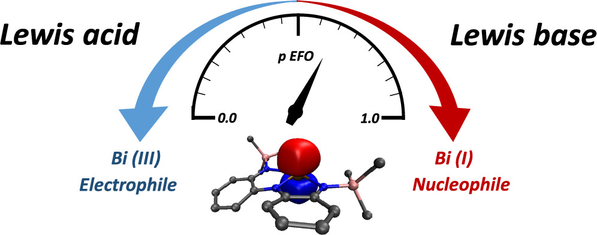
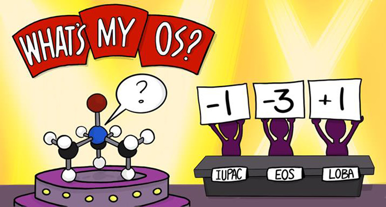
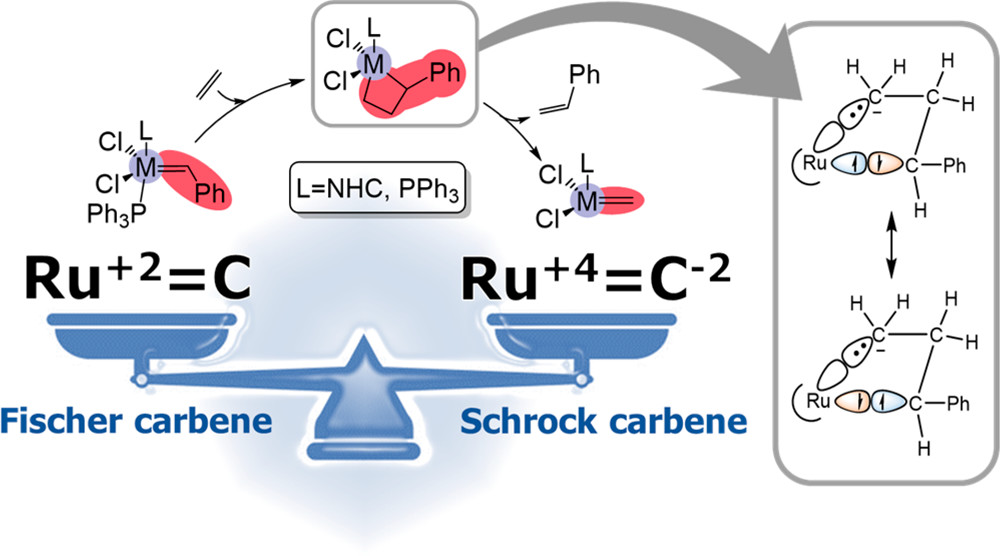

30 publications (17 as first/corresponding author, h‑index 18).
Numbered oldest‑to‑newest; displayed newest‑first.
* = corresponding author.
Full list: Google Scholar
· ORCID.
-

Tomasini, M.; Caporaso, L.; Gimferrer, M.*; Poater, A. On the Use of Chemical Bonding Descriptors in Machine Learning. Coord. Chem. Rev. 2026, 550, 217383. DOI
-
Monreal-Corona, R.; Jurado, L.; Ishikawa, H.; Gimferrer, M.; Poater, A.; Bobadilla, L. F.; Axet, M. R.; Posada-Pérez, S. Computational and Experimental Insights into Single-Atom Catalysts Supported on g-C3N4: Unraveling the Superior Stability and Catalytic Activity of Rh in Hydroformylation Reactions. Appl. Surf. Sci. 2025, 698, 163050. DOI
-
Borter, J. H.; Kar, S. G.; Kangsa Banik, S.; Demeshko, S.; Oswald, R.; Gimferrer, M.; et al. Cooperativity of Electron Transfer Coupled Spin Transitions in a Tetranuclear Fe/Co Prussian Blue Analogue Revealed by Ultrafast Spectroscopy. Angew. Chem. Int. Ed. 2025, 64 (27), e202505813. DOI
-
Hasecke, L.; Breitenbach, M.; Gimferrer, M.; Oswald, R.; Mata, R. A. Addressing Anharmonic Effects with Density-Fitted Multicomponent Density Functional Theory. J. Phys. Chem. A 2025, 129 (15), 3560–3566. DOI
-
Karnbrock, S. B. H.; Köster, J. F.; Becker, I.; Golz, C.; Meyer, F.; Gimferrer, M.; et al. Bis(amidophenolate)-Supported Pnictonanides: Lewis Acid-Induced Electromerism in a Bismuth Complex. Chem. Sci. 2025, 16 (31), 14178–14185. DOI
-
Aniban, X.; Ferrer, M.; Montero-Campillo, M. M.; Mata, R. A.; Contreras-García, J.; Gimferrer, M.* NCI Orbital Decomposition and Critical Comparison to Local Correlation Schemes. Phys. Chem. Chem. Phys. 2025, 27 (24), 13033–13042. DOI
-
Gimferrer, M.; Hasecke, L.; Bödecker, M.; Mata, R. A. Accurate Vibrational Hydrogen-Bond Shift Predictions with Multicomponent DFT. Chem. Sci. 2025, 16 (24), 11002–11011. DOI
-
Salvador, P.; Ramos-Cordoba, E.; Montilla, M.; Pujal, L.; Gimferrer, M.* APOST-3D: Chemical Concepts from Wavefunction Analysis. J. Chem. Phys. 2024, 160 (17), 174104. DOI
-

Tomasini, M.; Gimferrer, M.*; Caporaso, L.; Poater, A. Rhenium Alkyne Catalysis: Sterics Control the Reactivity. Inorg. Chem. 2024, 63 (13), 5842–5851. DOI
-
Gimferrer, M.; Salvador, P. Exact Decompositions of the Total KS-DFT Exchange–Correlation Energy into One- and Two-Center Terms. J. Chem. Phys. 2023, 158 (23), 234105. DOI
-
Joly, N.; Gimferrer, M.; Escayola, S.; Cendra, M.; Coufourier, S.; Lohier, J.-F.; Renaud, J.-L.; Solà, M.; Poater, A. Enhancement of Knölker Iron Catalysts for Imine Hydrogenation by Predictive Catalysis: From Calculations to Selective Experiments. Organometallics 2023, 42 (14), 1784–1792. DOI
-
Gimferrer, M.; Danés, S.; Andrada, D. M.; Salvador, P. Merging the Energy Decomposition Analysis with the Interacting Quantum Atoms Approach. J. Chem. Theory Comput. 2023, 19 (12), 3469–3485. DOI
-
Aldossary, A.; Gimferrer, M.; Mao, Y.; Hao, H.; Das, A. K.; Salvador, P.; Head-Gordon, M. Force Decomposition Analysis: A Method to Decompose Intermolecular Forces into Physically Relevant Component Contributions. J. Phys. Chem. A 2023, 127 (7), 1760–1774. DOI
-
Gimferrer, M.; Danés, S.; Vos, E.; Yildiz, C. B.; Corral, I.; Jana, A.; Salvador, P.; et al. Reply to the 'Comment on "The Oxidation State in Low-Valent Beryllium and Magnesium Compounds"' by S. Pan and G. Frenking. Chem. Sci. 2023, 14 (2), 384–392. DOI
-
Grünwald, A.; Goswami, B.; Breitwieser, K.; Morgenstern, B.; Gimferrer, M.; Munz, D.; Meyer, K. Palladium Terminal Imido Complexes with Nitrene Character. J. Am. Chem. Soc. 2022, 144 (20), 8897–8901. DOI
-
Gimferrer, M.; Joly, N.; Escayola, S.; Viñas, E.; Gaillard, S.; Solà, M.; Renaud, J.-L.; Poater, A. Knölker Iron Catalysts for Hydrogenation Revisited: A Nonspectator Solvent and Fine-Tuning. Organometallics 2022, 41 (10), 1204–1215. DOI
-
Gimferrer, M.; Danés, S.; Vos, E.; Yildiz, C. B.; Corral, I.; Jana, A.; Salvador, P. The Oxidation State in Low-Valent Beryllium and Magnesium Compounds. Chem. Sci. 2022, 13 (22), 6583–6591. DOI
-

Gimferrer, M.; Aldossary, A.; Salvador, P.; Head-Gordon, M. Oxidation State Localized Orbitals: A Method for Assigning Oxidation States Using Optimally Fragment-Localized Orbitals and a Fragment Orbital Localization Index. J. Chem. Theory Comput. 2022, 18 (1), 309–322. DOI
-

Gimferrer, M.; Danés, S.; Andrada, D. M.; Salvador, P. Unveiling the Electronic Structure of the Bi(+1)/Bi(+3) Redox Couple on NCN and NNN Pincer Complexes. Inorg. Chem. 2021, 60 (23), 17657–17668. DOI
-

Gimferrer, M.; Van der Mynsbrugge, J.; Bell, A. T.; Salvador, P.; Head-Gordon, M. Facing the Challenges of Borderline Oxidation State Assignments Using State-of-the-Art Computational Methods. Inorg. Chem. 2020, 59 (20), 15410–15420. DOI
-
Gimferrer, M.; D'Alterio, M. C.; Talarico, G.; Minami, Y.; Hiyama, T.; Poater, A. Allyl Monitorization of the Regioselective Pd-Catalyzed Annulation of Alkylnyl Aryl Ethers Leading to Bismethylenechromanes. J. Org. Chem. 2020, 85 (19), 12262–12269. DOI
-
Ramos, M.; Poater, J.; Villegas-Escobar, N.; Gimferrer, M.; Toro-Labbé, A.; Miralles-Cuevas, S.; Llobet, A.; Poater, A. Phenoxylation of Alkynes through Mono‐ and Dual Activation Using Group 11 (Cu, Ag, Au) Catalysts. Eur. J. Inorg. Chem. 2020, 2020 (11–12), 1123–1134. DOI
-
Gimferrer, M.; Comas-Vilà, G.; Salvador, P. Can We Safely Obtain Formal Oxidation States from Centroids of Localized Orbitals? Molecules 2020, 25 (1), 234. DOI
-

Gimferrer, M.; Salvador, P.; Poater, A. Computational Monitoring of Oxidation States in Olefin Metathesis. Organometallics 2019, 38 (24), 4585–4592. DOI
-
Masdemont, J.; Luque-Urrutia, J. A.; Gimferrer, M.; Milstein, D.; Poater, A. Mechanism of Coupling of Alcohols and Amines To Generate Aldimines and H2 by a Pincer Manganese Catalyst. ACS Catal. 2019, 9 (3), 1662–1669. DOI
-
Poater, J.; Gimferrer, M.; Poater, A. Covalent and Ionic Capacity of MOFs To Sorb Small Gas Molecules. Inorg. Chem. 2018, 57 (12), 6981–6990. DOI
-
Naji-Rad, E.; Gimferrer, M.; Bahri-Laleh, N.; Nekoomanesh-Haghighi, M.; Poater, A. Exploring Basic Components Effect on the Catalytic Efficiency of Chevron-Phillips Catalyst in Ethylene Trimerization. Catalysts 2018, 8 (6), 224. DOI
-
Gimferrer, M.; Minami, Y.; Noguchi, Y.; Hiyama, T.; Poater, A. Monitoring of the Phosphine Role in the Mechanism of Palladium-Catalyzed Benzosilole Formation from Aryloxyethynyl Silanes. Organometallics 2018, 37 (9), 1456–1461. DOI
-
Luque-Urrutia, J. A.; Gimferrer, M.; Casals-Cruanas, E.; Poater, A. In Silico Switch from Second- to First-Row Transition Metals in Olefin Metathesis: From Ru to Fe and from Rh to Co. Catalysts 2017, 7 (12), 389. DOI
-
Skara, G.; Gimferrer, M.; De Proft, F.; Salvador, P.; Pinter, B. Scrutinizing the Noninnocence of Quinone Ligands in Ruthenium Complexes: Insights from Structural, Electronic, Energy, and Effective Oxidation State Analyses. Inorg. Chem. 2016, 55 (5), 2185–2199. DOI